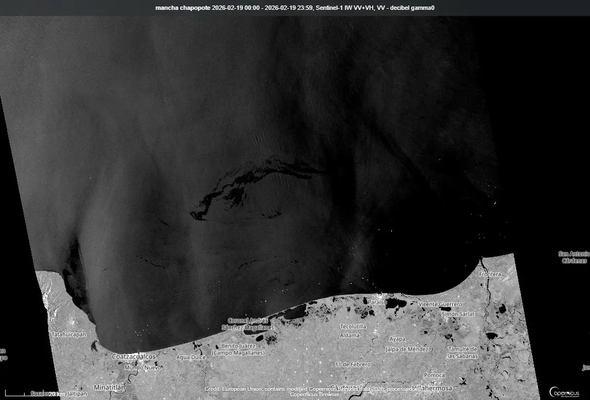
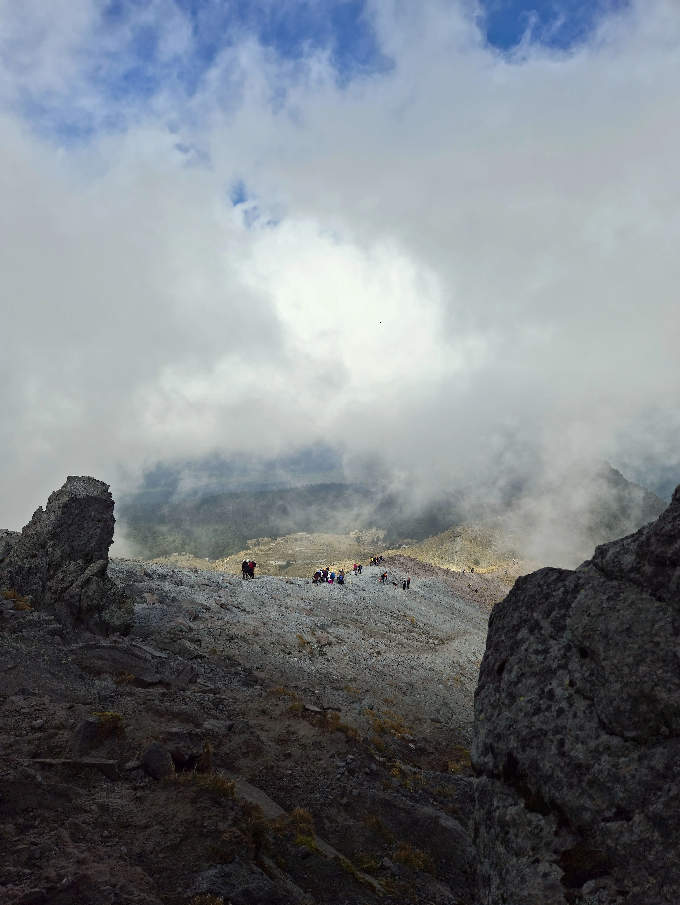
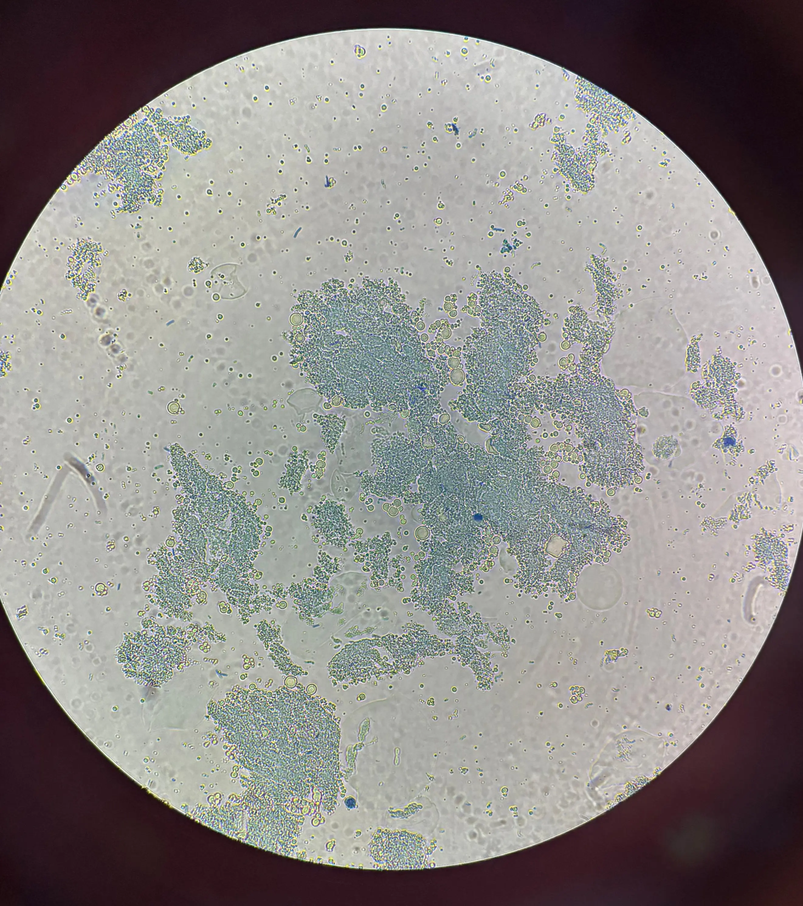

Marea Negra
El sello de asfixia sobre el golfo. Un conflicto entre la herencia azul y la necromasa industrial.
Archivo completo de investigaciones y diagnósticos

El sello de asfixia sobre el golfo. Un conflicto entre la herencia azul y la necromasa industrial.
Ingeniería metabólica y sangre sin cuerpo. Reprogramando el rojo para una producción sin sacrificio.

Donde el bosque se rinde. Análisis de la resistencia biológica y la memoria del Pinus hartwegii en la frontera vertical.
Respiramos aire de hace 10,000 años. El manual de operación de la maquinaria planetaria del abismo.

Disección del asedio químico en un frasco de fermentos. La biotecnología detrás del asalto láctico.